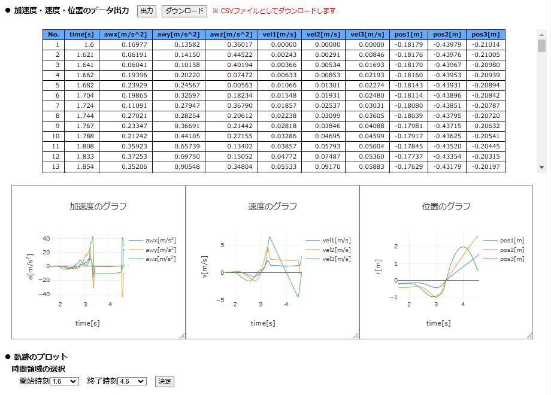

【操作方法】
■ 加速度・速度・位置のデータ出力
数値積分により位置データを取得後，「● 加速度・速度・位置のデータ出力」の行が表示されるので，右側にある「出力」ボタンを押すと，加速度・速度・位置のデータがまとめてテーブルとして表示され，その下に加速度・速度・位置のグラフが表示される．加速度列の選択で複数の成分を選択した場合，これらのグラフにおいて複数の成分のデータが重ねてプロットされる．

データの平滑化（フーリエ変換による平滑化，最小二乗近似による平滑化）を実行していた場合，「元のデータ」「平滑化データ」「差分データ」のうち選択したデータがここで出力される．
加速度・速度・位置のデータ出力後，「出力」ボタンの右側に「ダウンロード」ボタンが現れるので，それを押すとCSVファイルとしてデータをダウンロード出来る．また，出力した位置データを用いて運動の軌跡をプロットすることができる．ただし，加速度列の選択で1成分しか選択していない場合，1次元運動とみなされ，軌跡のプロットはできない．